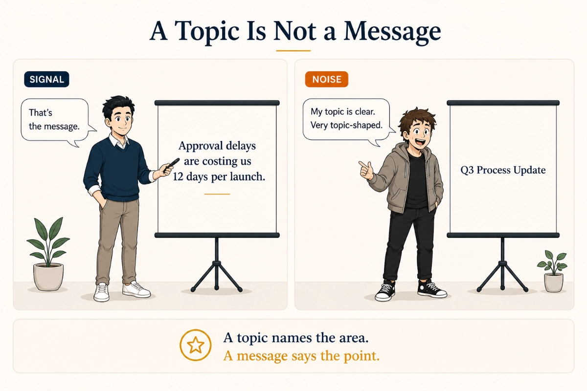
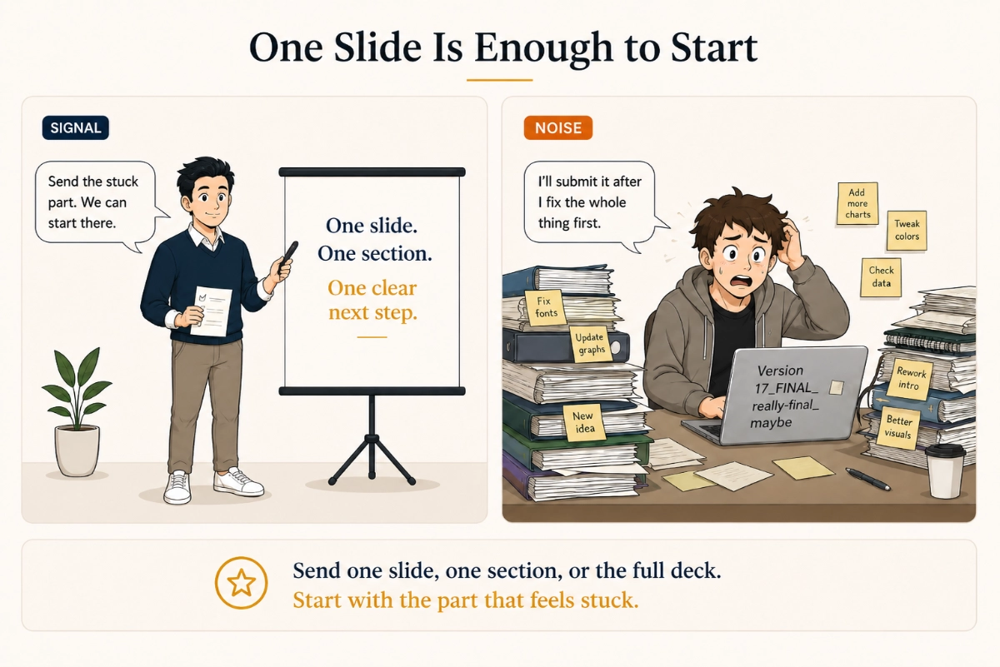
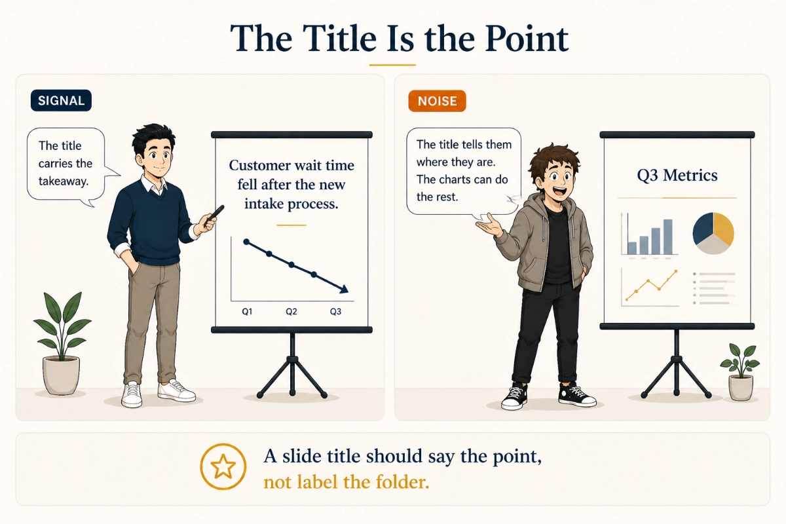
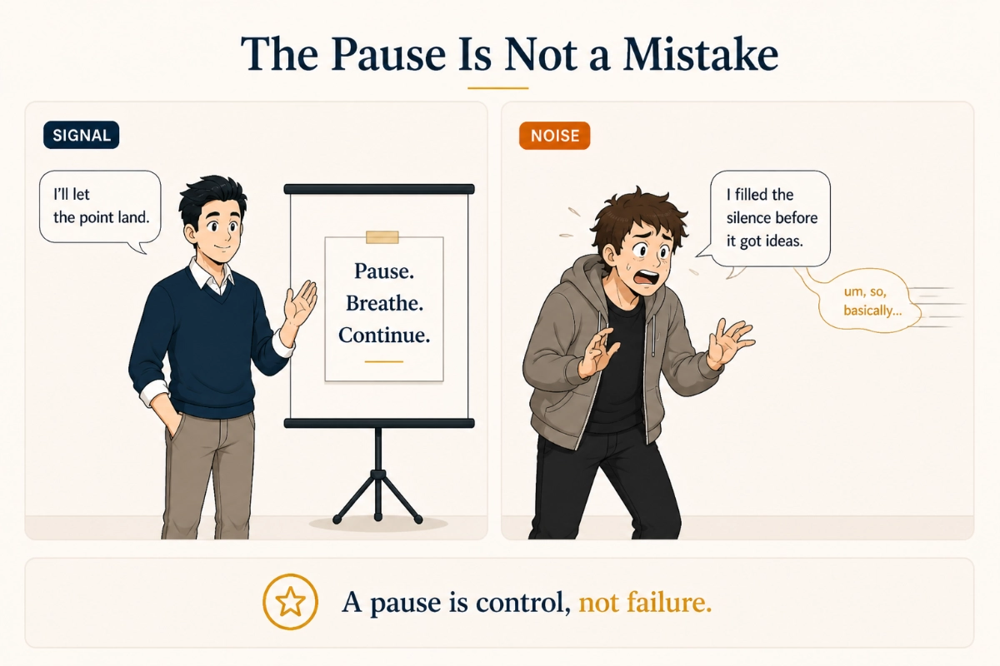
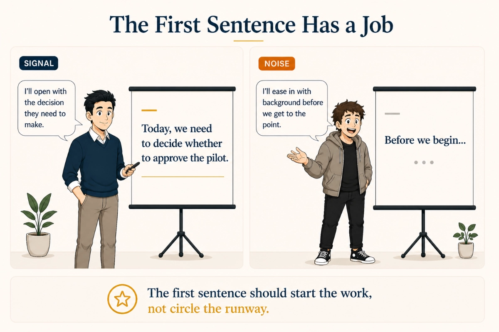
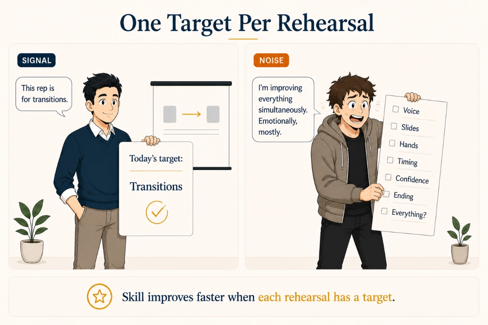
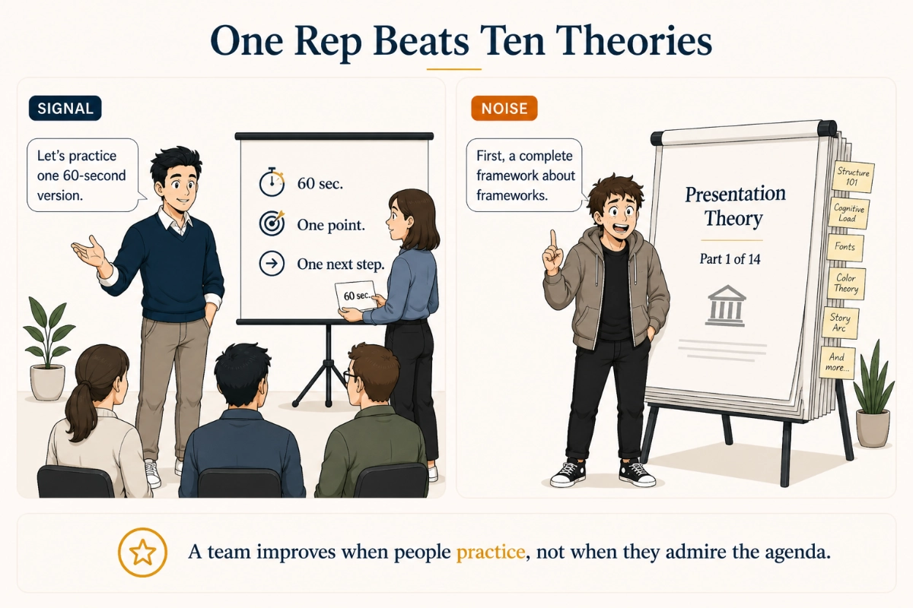
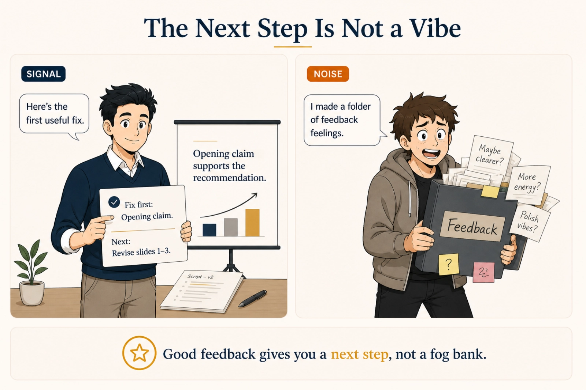
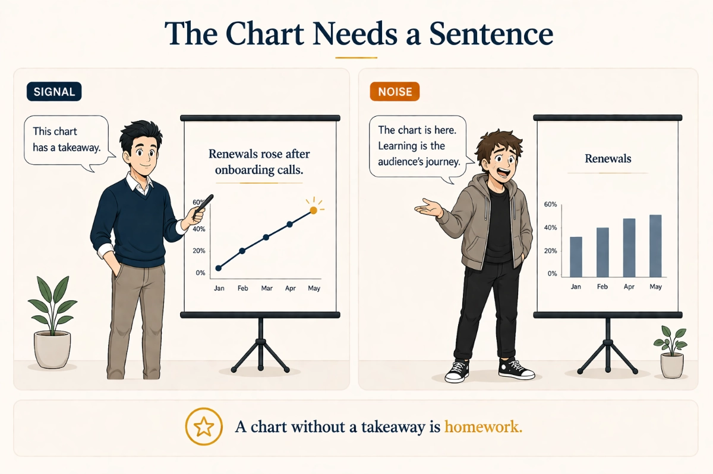

Clarify the message
Sharpen the structure, emphasis, and narrative so the point lands earlier and more clearly.

If you're presenting in English or across languages, Signal over Noise helps you sharpen the message, clean up the deck, rehearse the delivery, and walk in with a plan.
Real presentations. Real feedback. Clear next steps.
The free diagnostic gives 3-5 specific fixes and a recommended next step. It is not a full rewrite, full deck redesign, or rehearsal plan.
Who This Is For
Signal over Noise is for capable professionals who need clearer structure, a stronger deck, better rehearsal, and more confidence when the presentation matters.
That includes founders, academics, operators, and teams presenting in English or across languages. The goal is better communication. Full stop. Not making people feel like the problem is their English.
How Signal over Noise Helps

Sharpen the structure, emphasis, and narrative so the point lands earlier and more clearly.

Fix hierarchy, pacing, and density so the slides support the talk instead of competing with it.

Work on timing, transitions, emphasis, and room confidence before the presentation happens.

Get focused short-term help when an important presentation needs fast, meaningful improvement.

Use coaching to strengthen presentation habits over time, not just for one event.

Raise presentation quality across a group through workshops and team support.

How It Works
01 / Start
Share the script, deck, or recorded delivery that needs review.
02 / Context
Tell us who the audience is, why the presentation matters, when it happens, and where the friction is.
03 / Review
The review starts with the real material, not a vague summary.
04 / Recommendation
You'll get a clear recommendation: refinement, rehearsal, sprint support, coaching, or a lighter next step if that is the honest answer.

Proof and Credibility
This section shows a before-and-after slide comparison, a sample diagnostic preview, and the people behind the work.

Before / After Slide Comparison


Clearer hierarchy, better pacing, and a more obvious takeaway.
Sample Diagnostic Markup
Founder-led support
Signal over Noise is built around real review, practical fixes, and direct presentation support.

Founder / Coach
Ben helps professionals shape the message, sharpen the language, improve the deck, and build delivery confidence for presentations that matter.
Specialist support
Consultant
Andrew supports message refinement, storytelling clarity, and public-speaking work when a presentation needs another specialist perspective.
Services
Start free if the problem is unclear, request paid help for a real presentation, ask about team workshops, or use the Mallang partner route for scheduled classes.
Start Free
Best when the problem is unclear. Send current material and get specific fixes plus a recommended next step.
Request a Free DiagnosticDirect Support
Focused help for a real presentation, pitch, meeting, lecture, script, deck, or rehearsal need.
Request Paid SupportTeams
Practical training for groups that need clearer messages, better slides, and shared rehearsal habits.
Ask About a WorkshopPartner Route
School-hosted 1:1 business communication and presentation practice for learners who prefer a partner program.
View Mallang Class DetailsNext Step
Submit the request, and we'll review the presentation materials and context before replying with the best next step.
Real presentations. Real feedback. Clear next steps.
The free diagnostic gives 3-5 specific fixes and a recommended next step. It is not a full rewrite, full deck redesign, or rehearsal plan.